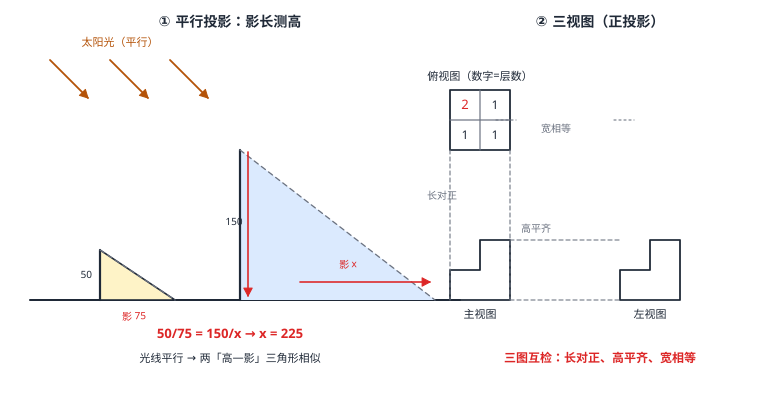

投影与视图
光线照物体落在平面上就是投影：太阳光近似平行（平行投影，影子形状随面与光线角度变化，正投影保持形状）、路灯灯光从一点散开（中心投影，影子随距离变化）。沿三个互相垂直的方向作正投影，得到三视图——主视图（从正面）、左视图（从左）、俯视图（从上），「长对正、高平齐、宽相等」是三种视图互检的口诀。影长计算、由视图还原立体，是几何走向工程制图的最后一站。
| 所属主题 | 相似与投影 |
|---|---|
| 所属模块 | 几何 |
| 课标学段 | 第四学段（7~9 年级） |
| 前置知识 | 相似三角形的判定与性质、位似 |
| 核心素养 | 几何直观空间观念推理能力 |
教材定位
人民教育出版社《人教版（2024版）义务教育教科书·数学》
九年级下册第33章 投影与视图33.1 投影33.2 三视图
对应九下 33.1 与 33.2：平行投影与中心投影在 33.1，画三视图与由三视图想象物体在 33.2。
说明
投影的分类：光线照向物体，落在平面上的影子叫投影。平行光线（太阳近似）→ 平行投影；从一点散开的光线（路灯、手电）→ 中心投影。影子的长短与方向由光线方向和物体姿态共同决定——同一个人，中午影子短、傍晚影子长，就是光线角度在变。
正投影：投影线垂直于投影面的平行投影。物体的正投影「保形不保长」：平面图形平行于投影面时，影子与原形全等（长度不变）；倾斜时形状被压扁（只在光线方向缩短）；线段垂直投影面时缩成一个点。三视图全部用正投影——工程图要求「不变形」，这是底线。
三视图：从正面看（主视图）、从左面看（左视图）、从上面看（俯视图），三个方向的正投影。三图互检口诀——长对正（主视图与俯视图的横向长度一致）、高平齐（主视图与左视图的纵向高度一致）、宽相等（俯视图与左视图的宽度一致）。画图顺序建议先主视图，再俯视图（放主视图正下方），最后左视图（放主视图正右方）。
由物体画视图与由视图还原物体：一个视图定不了一个物体（圆柱、球、圆锥的俯视图都含圆）；两个视图能大幅缩小范围；三个视图通常唯一确定（简单几何体组合）。读图时把每个视图「翻」回立体方向：俯视图的数字（高度标注）表示该处摞了几层。
使用场景
路灯下走动：人从路灯正下方走向远处，影子越拉越长——中心投影；同一时刻两根电线杆的影子却保持同样的「高与影比」——太阳的平行投影。一晚一昼，两种投影在同一条路上演示。
工程图纸：零件图纸用三视图交付生产——车间师傅拿着主视图对尺寸、俯视图看孔位、左视图看高度，「长对正、高平齐、宽相等」错了就返工，三条对齐线就是图纸的法律。
注意点
正投影保形有前提：物体面与投影面平行才不变形。圆面斜对着投影面，影子是椭圆；倾斜的矩形影子是平行四边形或更扁的矩形。
三视图的「左视图」是从物体左方看，画在主视图右侧（第一角投影法约定）；从右看与从左看是两个不同的图，别以为镜像就一样——含数字标注的组合体尤其如此。
判断立体要「三图合璧」：只看俯视图是一个圆，立体可能是圆柱、圆锥、圆台或球；必须再看主视图（矩形→圆柱、三角形→圆锥）才能锁定。
证明

图 1：左——平行投影：太阳光平行，矮杆与高杆的「高—影」三角形相似，影长比即高比；右——正投影得三视图：俯视图（数字为该处摞的层数）与主视图、左视图的阶梯形，三图之间以长对正、高平齐、宽相等互检
证明
结论 1平行投影下影长与物高成比例：\tfrac杆高杆影=楼高/楼影。
太阳光近似平行，竖直的杆与楼各自和影子构成的直角三角形中，光线是同一组平行线截出的斜边——两角分别相等（光线倾角相同、地面与竖直方向垂直），AA 相似（相似三角形的判定与性质）：\tfrac杆高杆影=\tfrac楼高楼影。影长比例就是相似比（图 1 左）。
关键一步依据是 AA 相似（相似三角形的判定与性质）：太阳光平行，杆与楼各自和影子构成的直角三角形中，光线倾角相同给出第一个锐角相等，地面与竖直方向都垂直给出第二个直角，两角对应相等即相似。相似三角形的对应边成比例，杆高对应楼高、杆影对应楼影，比值相等——影长比例就是相似比。
结论 2中心投影下人与灯形成的两个三角形同样相似，影子越长说明人离灯越远。
路灯 L、人头顶 H、影端 F 共线（一条光线）；人与影构成的三角形与路灯高和「灯到影端」构成的三角形共用顶角 \angle L，竖直人与竖直灯平行给出第二对角相等——AA 相似。影子越长，说明人离灯越远——相似比随时在变。
关键一步依据是 AA 相似：路灯、头顶与影端在同一条光线上，两个三角形共用顶角 \angle L；竖直的人与竖直的路灯互相平行，给出第二对相等的角，AA 判定成立。与平行投影不同的是这里的相似比随时在变——顶角固定而两边长短随人的位置改变，所以影子越长说明人离灯越远。
结论 3正投影不改变平行于投影面的线段的长度和方向；倾斜的线段影子变短，垂直于投影面的线段影子缩成一点。
设线段 AB 平行于投影面，投影线是一组垂直于投影面的平行线——它们把 AB 的两个端点「平移」到投影面上，平移不改变长度与方向，故影子 A'B'=AB，线段平移即全等。线段倾斜时，把 AB 分解为「平行于面」（原样保留）与「沿投影线方向」（缩成 0）两个分量——影子只剩前者，故变短；垂直投影面时全缩为一点。
关键一步依据是「投影线是一组互相平行且都垂直于投影面的平行线」：线段平行于投影面时，两个端点沿投影线落到投影面上，等于把整条线段平移过去，平移不改变长度与方向，所以影子 A'B'=AB；倾斜时线段可拆成「平行于面」与「沿投影线方向」两个分量，后者被投影压成 0，只剩前者，故变短；完全垂直时两个分量都归零，影子是一个点。
结论 4三视图对齐三律：长对正（主视图与俯视图）、高平齐（主视图与左视图）、宽相等（俯视图与左视图）。
把立体放进长方体盒子里（长 = 左右、宽 = 前后、高 = 上下）。主视图是「正面压扁」：保留长与高；俯视图是「顶上压扁」：保留长与宽；左视图是「左面压扁」：保留宽与高。三张图两两共享一个维度——共享的那一维必须相等：长对正（主与俯共「长」）、高平齐（主与左共「高」）、宽相等（俯与左共「宽」）。
关键一步依据是三张视图各自压扁的方向：主视图正面压扁保留长与高，俯视图顶上压扁保留长与宽，左视图左面压扁保留宽与高。两张视图共享的那一维必须相等，否则同一个棱长在两张图上会读出两个数——这是画图时的自检标准，也是由三视图还原立体的依据。
动手实验
正午前后拿一块硬纸板（剪个三角形）在阳光下摆：纸板平行于地面时影子与纸板全等（对齐叠合验证）；慢慢倾斜，影子在光线方向逐渐压扁；垂直于地面时影子缩成一条线。晚上拿台灯当中心光源：铅笔竖在桌上，把灯、笔尖、影端三点用铅笔尖点地标记再连线——一组「灯高三角形」与「人影三角形」的相似结构自动浮出，影子随铅笔远离台灯逐渐拉长。
解题思路
影长计算两问：题目给太阳（平行光）→ 列「高:影」等比（两物同一比值）；给路灯（点光源）→ 找「灯高三角形」与「人影三角形」共顶角加平行的 AA 相似（例 3）。
画三视图流程：摆正物体 → 画主视图 → 俯视图画在主视图正下方、与主视图「长对正」 → 左视图画在主视图正右侧、与主视图「高平齐」 → 检查俯视图与左视图「宽相等」。
由俯视图数字还原：每个数字是一列小立方体的层数——主视图每列取「该列最大数字」，左视图同理（按行的最大值）。画完用三律回检（例 2）。
按场景的例题
例 1（场景：测量与工程） 旗杆测高
同一时刻，2 米长的测杆影长 3 米；旗杆影子长 42 米。求旗杆高度，并说明为什么影长比是「同一时刻」的合法条件。
解：太阳光平行：\tfrac23=\tfrach42，3h=84，h=28 米。合法性来自平行投影——同一时刻光线方向唯一（倾角相同），两个「高—影」直角三角形的对应角全等，AA 相似成立；不同时刻倾角不同，比值失效。
答：旗杆高 28 米。
例 2（场景：图形设计） 积木组合体三视图
一个组合体由 5 个相同小立方体组成：俯视图为 2×2 方格（田字），左后格摞 2 层，其余三格各 1 层。画出（描述）它的主视图与左视图，并校核「宽相等」。
解：主视图：从正面看，物体按左右分成两列——左列（左后 2 层、左前 1 层）最高 2 层；右列（右后、右前各 1 层）最高 1 层。主视图是「左列 2 格、右列 1 格」的阶梯形。左视图：从左面看，物体按前后分成两列——后排（左后 2 层、右后 1 层）最高 2 层；前排（两格各 1 层）最高 1 层，同为两列阶梯形。校核三律：主视图横向 2 格＝俯视图左右 2 格（长对正）✓；左视图横向 2 格＝俯视图前后 2 格（宽相等）✓；主视图左列高 2＝俯视图左列最大数字 2 ✓。
答：主视图与左视图均为「左列 2 格、右列 1 格」的阶梯形；俯视图为田字格（左后格标 2）。
例 3（场景：物理情境） 路灯下影长计算
路灯高 5 米（灯在杆顶）。身高 1 米的儿童站在离灯杆 4 米处（灯正下方算起）。求此时儿童的影长，并问影子朝哪个方向、离灯越远影子怎样变化。
解：中心投影：灯 L、儿童头顶 H、影端 F 共线。灯高 5、人高 1，人与灯杆都竖直（平行）。相似三角形：\tfrac人高灯高=\tfrac影长灯到影端距离，即 \tfrac15=\tfracx4+x，4+x=5x，x=1 米。影子背向灯杆（光线从灯射向人再落地）；离灯越远，x 越大——比如离 8 米时 \tfrac15=\tfracx8+x 给 x=2 米，影子拉长。
答：影长 1 米，影子背向路灯；离灯越远影子越长。
常用推论
正投影保形与相似是一对孪生：面平行于投影面时影子全等（k=1）；中心投影里物、像、光源共线成比例（位似结构的物理版）——几何变换的两大成员在光影里合体。
圆柱、圆锥、球的视图对照：圆柱三视图＝矩形、矩形（含轴线虚线）、圆；圆锥＝三角形、三角形（含对称轴虚线）、圆；球＝三个圆——「两个视图同、第三个分家」的典型素材，训练三图合璧。
皮影戏与日晷是投影的两个古代身影：皮影是中心投影（光源近、影子大），日晷是平行投影（针影随太阳方位转，刻度盘读时间）——同一几何原理，一娱乐一计时。
易错点
错物体斜着放，正投影的影子与原物全等。
为什么错正投影保形仅当物体面平行于投影面；倾斜时沿光线方向的分量被压缩，影子变形变短。
正确面平行投影面才全等；倾斜变短、垂直缩为一点。
错画左视图时从物体右侧看。
为什么错左视图的定义是「从物体左方看」；从右看得到的是另一张图（右视图），对含不对称结构的组合体两者完全不同。
正确左视图＝从左方看；画在主视图正右侧是制图约定，别把「右侧位置」误当「右侧方向」。
错上午量杆影、下午量楼影，然后代入高影比。
为什么错平行投影的相似前提是「同一时刻」——两个时刻光倾角不同，两组三角形的对应角不再相等，比值没有可比性。
正确同一时刻完成两次测量，再列比例式。
直观理解
投影是「光线的几何」：太阳把万物的影子按同一角度压在地上，影子之间保持着与实物相同的比例——所以量影子就能算高墙；路灯则像一台随距离调倍率的放映机，离得越远影子被拉得越长。三视图是把这台压扁机固定在正面、左面、顶面三个方向各开一次：压一次丢一维，开三次凑齐三维——「长对正、高平齐、宽相等」就是三台机器共用的那根尺子（图 1 左是太阳的平行光、右是三台压扁机的分工）。